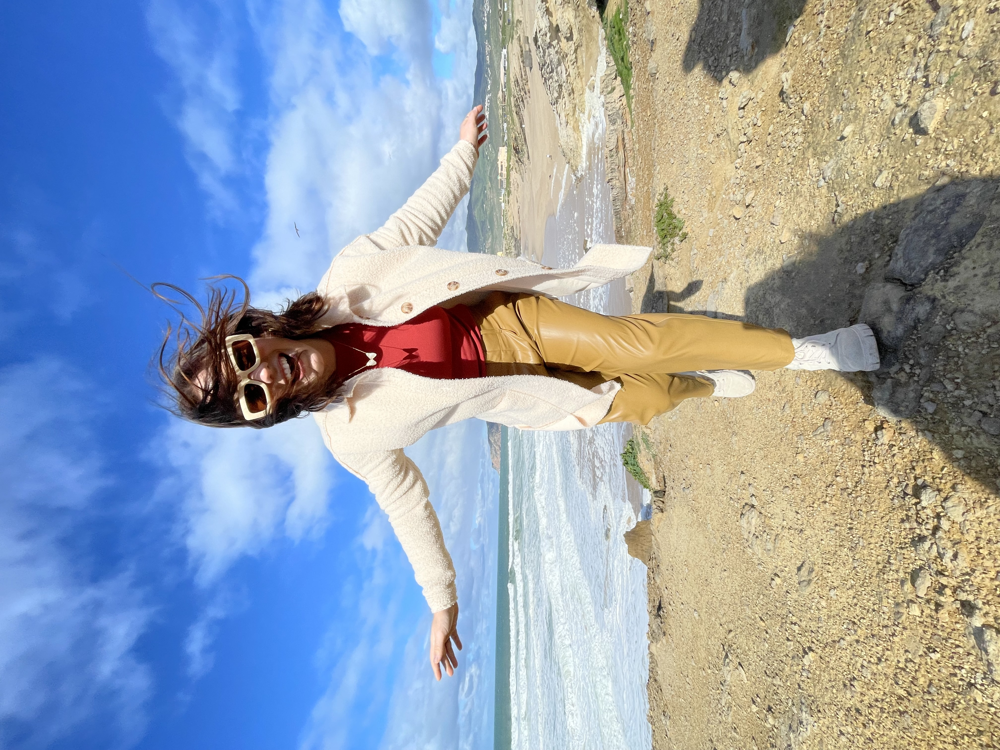
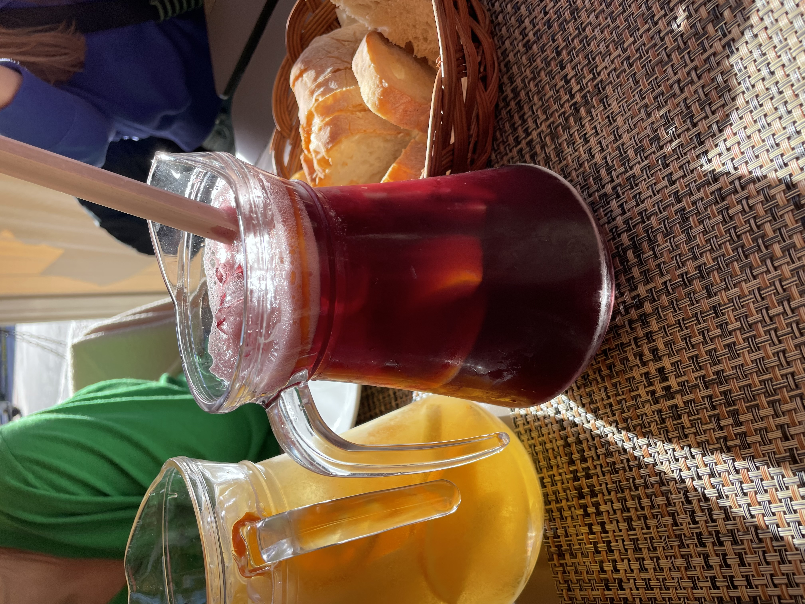
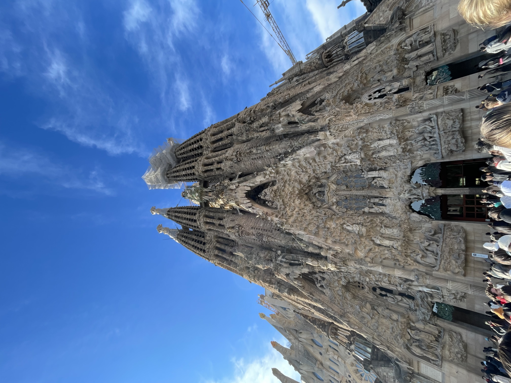
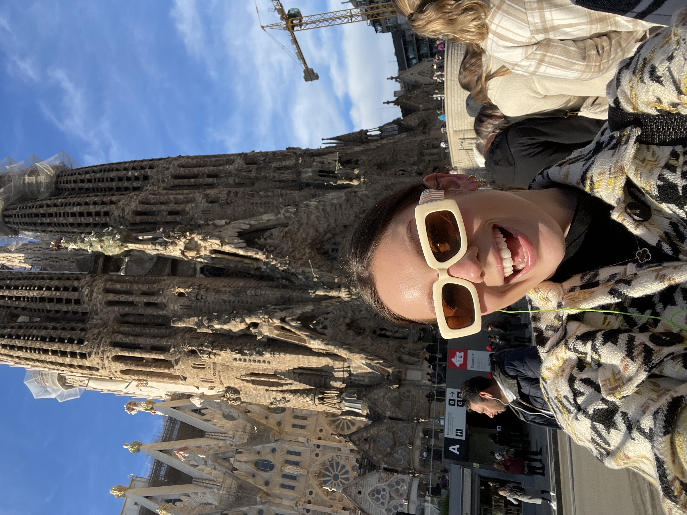
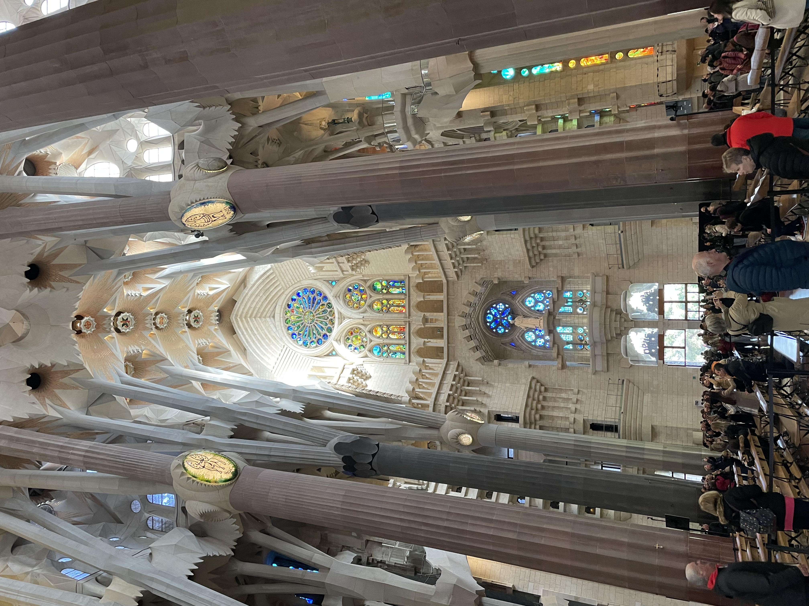

Come Abroad with Me!
Ahhhh Spain and Barcelona! The best (and only) foreign trip that I have been on so far. This trip really inspired me to travel even more. The food and the culture was unmatched from any trip that I have been on in my 21 years of life! There are so many pictures that I could share, but I made sure to pick out my favorites from the trip. Up above was my favorite part since I love seeing beaches and beach towns. Caiscas was beautiful and the geography around that town was something I have never experienced before! The video clip gives some more insight on what sites I saw!
One thing about traveling to these two countries is that the food is AMAZING! Everytime that we would go out to eat, a pitcher of sangria would emerge at our table. Interesting how that works sometimes! One thing that I noticed is that when you are getting your food they put out bread and butter every time. But, unlike the States, this bread ain't free! We unfortunately found that out two bread plates in! Another oddity is that water is not free either. They serve water from bottles as well as charge you for each one of those. So beware when you travel that this could be a factor in spending while you are out!
  One of my favorite places that I went to was the Sagrada Familia! This is the largest unfinished Catholic church in the whole world. It started its construction in the late 1800s and is still being added onto today! The detailing of this structure left me awestruck! From the outside it was amazing but in the inside it was even more beautiful. The stain glass windows inside revealed so many different colors and dimension! I definitely want to go again once the church is all finished.